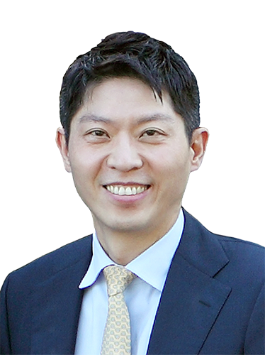

<?session_start();
@ob_start();
include "../config/dbconn.inc.php";
include "../config/functions.inc";

//=======메뉴인식 START=========//
$bMenuNum = "2";			//대메뉴
$mMenuNum = "0";			//중메뉴
$sMenuNum = "";				//소메뉴
//=======메뉴인식 END=========//

include "../include/header.html";
?>
<!-- // header -->

<section class="contents professor h100vh">
	<div class="contents-wrap">
		
		<div class="professorWrap">
			<div class="imgBox"></div>
			<div class="textBox">
				<h3>Hoon Sohn <span>Professor</span></h3>
				<dl>
					<dt>Address / Location</dt>
					<dd>
						Department of Civil and Environmental Engineering Korea,<br>
						Advanced Institute of Science and Technology (KAIST)<br>
						291 Daehak-ro, Guseong-dong, Yuseong-gu Daejeon, Republic of Korea, 34141
					</dd>
					<dt>Contact Information</dt>
					<dd>
						Office : <a href="tel:+82 42-350-3625">(+82) 42-350-3625</a><br>
						Fax : (+82) 42-350-8480<br>
						Email : <a href="mailto:sohnhoon@kaist.ac.kr">sohnhoon@kaist.ac.kr</a>
					</dd>
				</dl>
				<a class="cv" href="./file1/Sohn_CV.pdf" target="_blank">CV</a>
			</div>
		</div>
		
	</div>
</section>